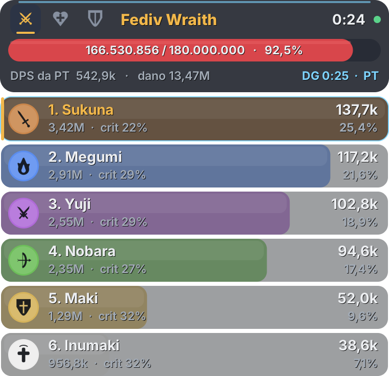
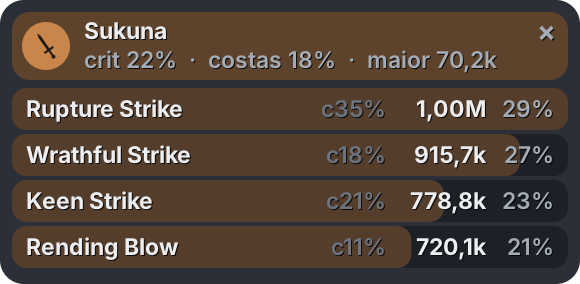

O AetherMeter mostra quanto cada um está batendo, curando e tankando, junto com a vida do chefe e o tempo de DG. Ele só lê o tráfego de rede e não mexe no jogo.


Clique nos ícones no topo do overlay para trocar de aba. Elas continuam clicáveis mesmo com o overlay travado.
O DPS de cada jogador, com o total, o crítico e a fatia da PT. Por padrão conta só o dano no chefe, como todo mundo compara; dá pra trocar para todo o dano da luta.
Feito para ficar no canto da tela sem atrapalhar.
Número cheio e porcentagem, tipo 1.950.000 / 3.200.000 · 60,9%.
Conta desde a entrada na DG e para ao matar o chefe ou sair.
Clique em alguém para abrir um painel ao lado com dano, golpes e crítico de cada skill.
Cada jogador com a cor e o símbolo da classe, pra bater o olho e saber quem é quem.
Filtra quem está em volta. Solo, ele descobre qual jogador é você, e o nome do seu personagem aparece desde o começo.
Ctrl+Alt+C copia o ranking da luta formatado. É só colar no canal da guild.
Role a rodinha do mouse sobre o overlay para rever as últimas 20 lutas.
Travado, o overlay deixa o clique passar direto pro jogo. Opacidade e tamanho ajustáveis.
Um único .exe: cria os atalhos, aparece em Apps e oferece instalar o Npcap se faltar.
Não precisa de administrador nem de nenhum runtime.
Baixe o ZIP, extraia e abra o AetherMeter.exe.
Ele se instala e cria atalhos na Área de Trabalho e no Menu Iniciar.
Se pedir, clique em “Sim”: abre o instalador oficial do Npcap. Pode seguir com as opções padrão.
Deixe o Aion 2 em janela sem bordas. A bolinha verde no overlay indica que achou o jogo.
“O Windows protegeu o computador”? O aviso aparece porque o programa não tem assinatura digital paga. Clique em Mais informações e depois em Executar assim mesmo.
Pra testar sem o jogo, abra o atalho AetherMeter (demonstração) no Menu Iniciar.
Nenhum usa Shift, pra não atrapalhar o dash. Dá pra trocar qualquer um em Menu → Ferramentas → Editar atalhos.
Ninguém pode garantir isso. O AetherMeter só lê os pacotes que chegam no seu PC, do mesmo jeito que o Wireshark: não injeta código, não lê a memória do jogo e não envia nada pra lugar nenhum. Mesmo assim, é uma ferramenta de terceiros que a NCSoft não aprovou. Use por sua conta e risco.
É o driver gratuito de captura de rede usado pelo Wireshark. É por ele que o AetherMeter enxerga o tráfego do jogo. O instalador oficial vem de npcap.com.
Em tela cheia exclusiva o Windows não deixa nada ficar por cima. Mude o Aion 2 para janela sem bordas (borderless) nas opções de vídeo.
O servidor só manda os nomes quando alguém teleporta ou entra numa DG. Em PT os nomes vêm junto com os dados da party. Solo, o AetherMeter descobre qual jogador é você pelos tempos de recarga das suas skills. Pra aparecer com o seu nome desde o começo, use botão direito → Nome do meu personagem; ele também aprende sozinho no primeiro teleporte.
Deve funcionar. Ele procura a conexão do jogo em todos os adaptadores de rede, inclusive os de VPN e loopback que esses programas usam. Se não achar, o Menu → Ferramentas → Diagnóstico mostra o que ele está vendo.
Patches podem mudar o formato dos pacotes. Ative Menu → Ferramentas → Gravar sessão, lute um pouco e mande o arquivo .pmrec da pasta de logs. Com ele dá pra corrigir sem precisar do jogo.
Em Configurações → Apps → AetherMeter, ou pelo atalho Desinstalar AetherMeter no Menu Iniciar. O Npcap continua instalado; se quiser, remova ele também em Apps.